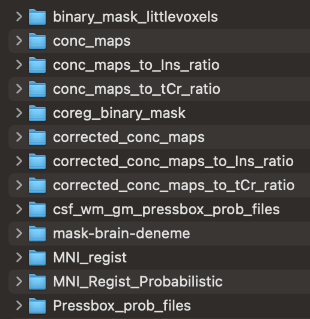
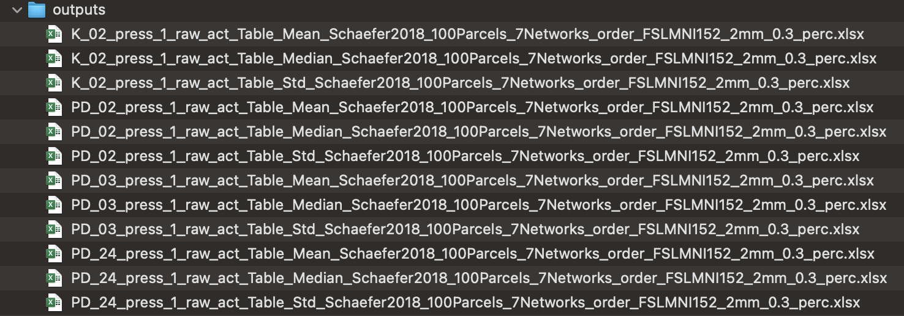

Chapter 5 Output Files
A folder named nifti will be created after the analysis.
It includes all spectral volumes.

FSLeyes link is suggested for nifti file visualization.
A folder named outputs will include all excell files after ROI Analysis.
